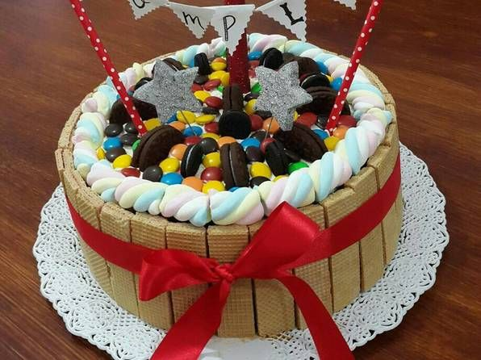

Menu
MenuTortas de casamiento
Los pasteles de casamientos son un sueño en la pastelería. ¿Qué mejor que tomar el sueño de la mujer que se casará, y plasmarlo perfectamente en una torta? Y si es blanca, mucho mejor, para jugar con texturas y diseños


Los pasteles de casamientos son un sueño en la pastelería. ¿Qué mejor que tomar el sueño de la mujer que se casará, y plasmarlo perfectamente en una torta? Y si es blanca, mucho mejor, para jugar con texturas y diseños
Tortas de Diseño, elaboradas artesanalmente, con pasión y cuidado en los detalles. Utilizando técnicas modernas de decoración. Para todo tipo de eventos.

Nuestra selección de tortas recorre todos los gustos: hacemos tortas frutales y frescas, las clásicas de siempre, muchas para fanáticos del dulce de leche o del chocolate (o de los dos!) y también algunas con sabores exóticos para los que les gusta probar cosas nuevas.

Podes elegir entre nuestros postres caseros, Chesse cake con frutos rojos, Tiramisu, Flan casero con dulce de leche, Chocotorta, Duo de chocolate, Brownie, Apple Crumble y Mousse de chocolate ( Tierra de cacao, crema de vainilla y frutos rojos)

Los cumpleaños de los chicos tienen esa mezcla de magia, color y diversión que se quedan pegadas a la memoria. Es un momento muy especial para ellos, ya que disfrutan junto a sus amigos y familiares pero también lo viven como toda una aventura. Si te toca organizar fiestitas como éstas y buscás consejos sobre tortas decoradas infantiles para estar en todos los detalles
